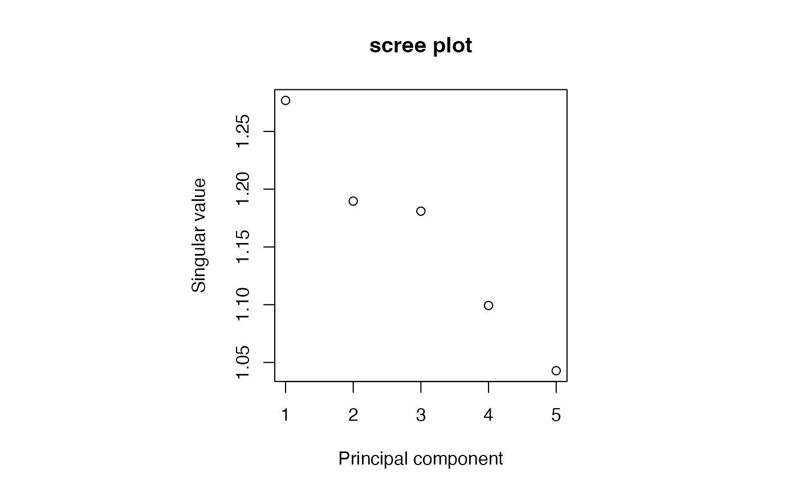

Window-based Randomized SVD with PCAone
Usage
PCAone(
x,
k,
...,
p = 7,
s = 20,
B = 64,
threads = 4,
threads2 = 4,
scaleAndCenter = TRUE,
shuffle = TRUE,
verbose = TRUE
)
# S4 method for class 'GenomicDataStream'
PCAone(
x,
k,
...,
p = 7,
s = 20,
B = 64,
threads = 4,
threads2 = 1,
scaleAndCenter = TRUE,
shuffle = TRUE,
verbose = TRUE
)Arguments
- x
GenomicDataStream, or matrix asmatrix,DelayedArray.- k
integer;
specifies the target rank of the low-rank decomposition. \(k\) should satisfy \(k << min(m,n)\).- ...
other argument to control streaming
- p
integer, optional;
number of additional power iterations (by default \(p=7\)).- s
integer, optional;
oversampling parameter (by default \(s=20\)).- B
integer, optional;
number of windows (by default \(B=64\)).- threads
integer, optional;
number of threads (by default \(threads=4\)) to read data- threads2
integer, optional;
number of threads (by default \(threads=4\)), used for linear algebra opertions- scaleAndCenter
bool, optional;
ifTRUE, scale and center features- shuffle
bool, optional;
ifTRUE(default) shuffle genomic regions, the next chunk is not in LD with the previous chunk- verbose
string, optional;
ifTRUE(default), print details
Value
PCAone returns a list containing the following three components:
- d
array_like;
singular values; vector of length \((k)\).- u
array_like;
left singular vectors; \((m, k)\) or \((m, nu)\) dimensional array.- v
array_like;
right singular vectors; \((n, k)\) or \((n, nv)\) dimensional array.
Details
PCAone implements the window-based Randomized SVD proposed by Li, et al. (2023).
If scaleAndCenter, the data matrix is scaled so that each feature has a mean of zero and a cross-product of 1. In this case the sum of squares of all eigen values equals the number of features (i.e sum(d^2) = p).
Computational time is spent on two steps:
1) Reading data from disk and and processing data. Multiple chunks can be read and processed in parallel. This is conrolled by setting threads
2) Updating PCA with current data chunk. Only one chunk can be processed at a time, but linear algebra operations can be parallelized. This is conrolled by setting threads2
If x is a matrix, PCA is performed using rows as features. Note: this is the _transpose_ of what svd() does.
Note
The singular vectors are not unique and only defined up to sign. If a left singular vector has its sign changed, changing the sign of the corresponding right vector gives an equivalent decomposition.
References
Li, Z., Meisner, J., & Albrechtsen, A. (2023). Fast and accurate out-of-core PCA framework for large scale biobank data. Genome Research, 33(9), 1599-1608. doi:10.1101/gr.277525.122 .
Author
Zilong Li zilong.dk@gmail.com, Gabriel Hoffman
Examples
# Example: PCA on genotype data
file <- system.file("extdata", "test.vcf.gz", package = "GenomicDataStream")
obj <- GenomicDataStream(file, "DS", chunkSize = 3)
res <- PCAone(obj, k=5, threads=1)
#> Read through...
#> # features: 10
#> # chunks: 2
#> # PCs: 5
#> # threads: 1
#>
Epoch 0 / 7
Epoch 1 / 7
Epoch 2 / 7
Epoch 3 / 7
Epoch 4 / 7
Epoch 5 / 7
Epoch 6 / 7
Epoch 7 / 7
Final decompositions
Completed
res
#>
#> PCA: Computed first 5 PCs
#>
#> $u
#> PC1 PC2 PC3
#> I1 -0.2195584 -0.02863333 -0.14971387
#> I2 -0.1518848 -0.03797283 0.05389429
#> ...
#>
#> $v
#> PC1 PC2 PC3
#> 1:10000:C:A -0.53910201 -0.1405398 -0.007546938
#> 1:11000:T:C -0.07783198 0.1641358 -0.288227120
#> ...
#>
#> $d
#> 1.276828 1.189663 1.180956 ...
#>
par(pty="s")
plot(res)
